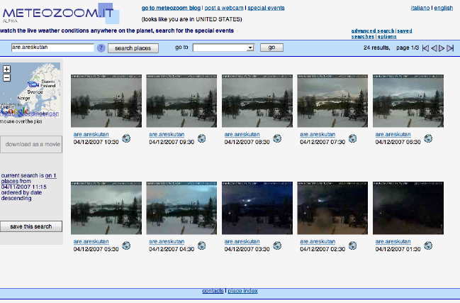
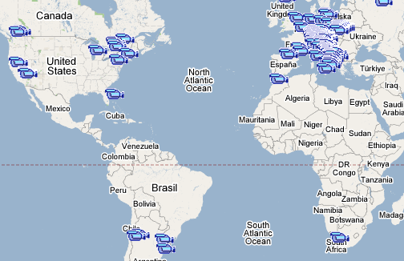

My name is Mauro Cioni, I am 35 and I graduated in Computer Science Engineering in 1996.
Currently I work in a software/consultancy company in Italy, where I am a software architect for complex web applications; I also follow the early stages of development to help others to start projects in the right way.
I live on my own, and I devote a fair part of my free time to cycling (both MTB and on the road), skiing, playing basketball and hunting mushrooms.
Most of the jobs I do in my company is to design web sites/portals, mainly on the intranet side. Sometimes I deal with portal products, but often we start from scratch and integrate the customer’s existing applications and services into our solutions.
Anyway, meteozoom.it (and its siblings meteozoom.com and meteozoomblog.it) are being developed on my own, completely outside from my job. They’re definitely hobby works, developed in my spare time. I wish I had more time for this, because I’ve got many ideas but little time.
I’ve always been curious about weather and what the weather was like around the globe, so I started looking at webcam pictures on the internet as soon as they became available.
Then I started thinking that maybe it would be interesting to collect these pictures on a regular basis for a further analysis in the future, and for creating short movies of the weather evolution over time.
At first I started by writing a small Java program that could read pictures over the net and store them on the local disk, which was running (and still runs) on a server permanently connected to the internet.
This went on for years (from 2003 to 2005) then, when I started owning tens of CDs of backup data I started wondering what I was storing them for and why.
So the idea of putting everything on a website was the logical consequence, and 2 years ago the first version of meteozoom.it came to life.

I actually store pictures up to more than 3 years ago (november 2003).
At first I only saved pictures of a few places around where I live (including a beautiful webcam on the top of Monte Cimone in the Appennini, which I crawl every minute – search for “cnr” to see it).
Every picture is online on the server’s local disks and the collection is continuously increased.
My goal was to make a huge collection of webcam pictures available over the net; this was quite exciting, because as far as I know nobody is collecting this kind of data and, since past is past, nobody will ever have the pictures that I own.
I wanted people to be able to check what the weather was like in a place on the world in a particular moment of the past.
Ease of use was my first goal, even if I am not too good at writing user interfaces. Then comes speed, because dealing with millions of pictures on a home PC is not that efficient.
A parallel goal was of course to have everything working at the lowest cost possible, so the whole “architecture” is on a couple of PCs in my home, running all open-source software.
To tell the truth, the first strong push to my development of the web interface came when Creator (version 1) came to life, because I didn’t want to implement all of the request/response Java code on my own (I know from my job experience that it takes a long time and is always error prone).
The web server machine is a single Pentium 3 with 1.3Gb of RAM and 4 hard disks (which are almost 900GB of space in total). It runs Linux Fedora Core 6, with Apache Tomcat 5.5 as application server and Awstats for web statistics
The database server is a single AMD Athlon XP+ with 1Gb of RAM. It runs Linux Fedora Core 6 and MySQL 5.1
The pictures crawling machine (the PC which explores and saves the webcam pictures) is a single Pentium 2 with 192Mb of RAM, and DSL Linux. The crawling application is a multithreaded real-time Java application
Internet connectivity is guaranteed by my home DSL connection, which only has a 384kbs upload speed (this is the main reason for the site's slowness).
As you can see the “production” environment is very old and quite slow, but I can guarantee that from the local network it’s much faster than from the internet, so the DSL connection is the main bottleneck. That's why I plan to upgrade to an upload speed of 1Mbs very soon.
The development machine is my laptop, running Windows Server 2003 and MySQL (among other things).
My development tool is NetBeans IDE 5.5 with Visual Web Pack; among other libraries I use Hibernate, many of the Jakarta Commons libraries, Log4j.
I upgraded to IDE from Creator in September 2006 (I think), while the first versions were written with Creator 1 and then Creator 2.
Well ... it was not very straightforward. At first I tried to simply update my project using the upgrade procedure described on the site. This seemed to work, but then I started having problems using the visual editor and other issues here and there.
After some time I decided then to create a VWP project from scratch and copy the single pages/JSPs into it by hand. Since then, everything is working great.
The main challenge is speed, second is speed, and then speed again.
I handle more than 9 million records in a single MySQL table, and I do database searches using a low-end PC, so optimizing for speed is quite challenging. Currently I am working on a mechanism of searching pictures at regular intervals of time, which makes the queries even slower (due to a limitation in MySQL's store procedure and in Hibernate's handling of them).
Another thing I try to have in mind is simplicity on the interface side. At first I used to have a single page with all of the search parameters in it, but it was very confusing so I tried to separate simple searches from expert ones.
Another issue is protecting my pictures from easy stealing from the outside...
On the technological site, I have to mention some difficulties I found in understanding some strange life cycle of JSF elements (which I don’t understand completely yet).
On the speed side, I use the fastest MySQL engine which does a great work I must say. Hibernate caching also gives a hand in speeding up things.
For protection of my precious pictures, I use encryption on the URLs (which should make it impossible to infer a new picture URL from its place/date) and I copy a picture to a temporary area before allowing the user to download it.
For the user interface, I separate beginner’s functionality from advanced one, I tried to put help hints where possible, and use AJAX to make the interaction smoother.
The small availability of components in the first version of Creator was solved by... waiting for the release of new ones, which in fact happened soon after.
Google Maps integration is done not by using the Netbeans-provided component, but by generating Javascript code dynamically “by hand”.
I had many minor problems to solve while developing, but I must say that the developer community on the SUN developer site helped me most of the times (and I helped others in some cases)
To solve the Javascript issue I had to use an inelegant workaround that
includes hidden fields, bean properties and use of Javascript’s
eval() function.

Include more powerful AJAX components.
The poorness of the very first version of Creator (mainly on the web components) didn’t help much, while now I honestly have to mention that the AJAX components that you can integrate in the IDE could be more complete.
For example, the Google Maps component doesn’t allow doing many of the things one may need, and so does the AJAX text component (which I use anyway).
Better
explanation of some advanced mechanism, like the “immediate”
attribute of visual components, the difference between prerender()
and preprocess() methods, the use of validators and converters
(which I still don’t know how to use...)
Include some facilities to deal with client-side Javascript (for example, it’s not easy to dynamically create client side Javascript code)
By using the Java locale mechanism and the Netbeans’ localization bundle editor.
I did not use the NetBeans internationalization wizard because it seems not to work for JSPs, and most of my strings where declared in JSP files and not Java sources.
I do all the work in my spare time so it’s quite hard to tell... What I can say is that I am working on meteozoom.it (both the website and the backend crawling application, in proportion of 95%-5%) since late 2004 I think.
As I probably work on it for an average of 3-5 hours per week, maybe a good figure of the overall developing time was around 500 hours. This does not include the time I spent learning how to use Creator 1 (and then 2 and then VWP), which was completely new for me at that time.
I don’t have much time to navigate all the pictures I have, but some things I caught include a lunar eclipse seen from Italy, some very beautiful sunrises and sunsets, the arrival of a stage of the Giro d’Italia (the famous bicycle tour) on the top of Passo dello Stelvio last year, some climbers on the top of Mount Aconcagua in Chile waving hello to the camera.
I would really like people to help me in finding interesting things caught by the webcams, as I would love help in finding new webcams to crawl. (Click "post a webcam" at the top of the page.)
I have to say that I have gone through a heavy restyling 6 months ago, which introduced Hibernate for database connections and applying a strong change to the user interface, so I wouldn’t change many things.
I can summarize what I would like to do in the near future:
The ability to create movies on the fly from the pictures
Integrate some weather forecast service with my site
(This is a dream:) A mechanism to automatically find webcams around the world without having to add them manually. I think this is almost impossible by now, I would need a standard for webcam hosting sites.
Try and write good Java code using the provided tools -- mainly refactoring facilities, beans creation tools for adding properties and fields.
Design the web interface using the VWP visual editor for 99% of the job, but then adjust the final settings on the generated JSPs directly -- for example for component styles.
Sometimes the editor doesn’t deal perfectly with JSP Expression Language, so try and edit it manually if you think something is not working as expected.
Study the JSF component lifecycle as implemented in Netbeans; might be hard at first, but then it results to be very powerful.
If coming from plain ASP/JSP request/response programming model, try hard to think in terms of visual components, actions and events. You can really write web interfaces pretty much like you work with client interfaces and this is very very powerful.
Netbeans
data provider
mechanism is really great; I suggest not to use it for
direct JDBC data access when dealing with large data sets.
Instead,
use the adapters to access data served by data-access frameworks,
like Hibernate. This acts as a clear and very good separation
between user interfaces and data layer.
Study and work together with other developers through the forums, they’re great.
Make good use of init() and destroy() methods, they’re great for avoiding database connection leaks that I used to have.
Download and learn the NetBeans Java Profiler, it really helps in understanding where and why code is behaving badly.
PS: Mauro is currently working together with the Visual Web pack team to be one of the first to migrate his web application to NetBeans IDE 6.0. We plan to post a follow-up interview with Mauro about the final version of his web portal. It will include more real-life tips and tricks for web application developers, so check back here soon!
How's the weather? See for yourself at Mauro's web portal meteozoom.com. New feature: Create a video from a row of pictures and watch the weather change.